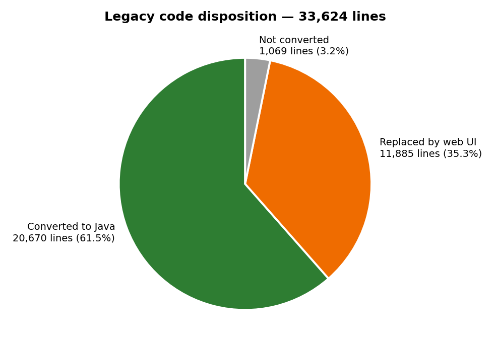
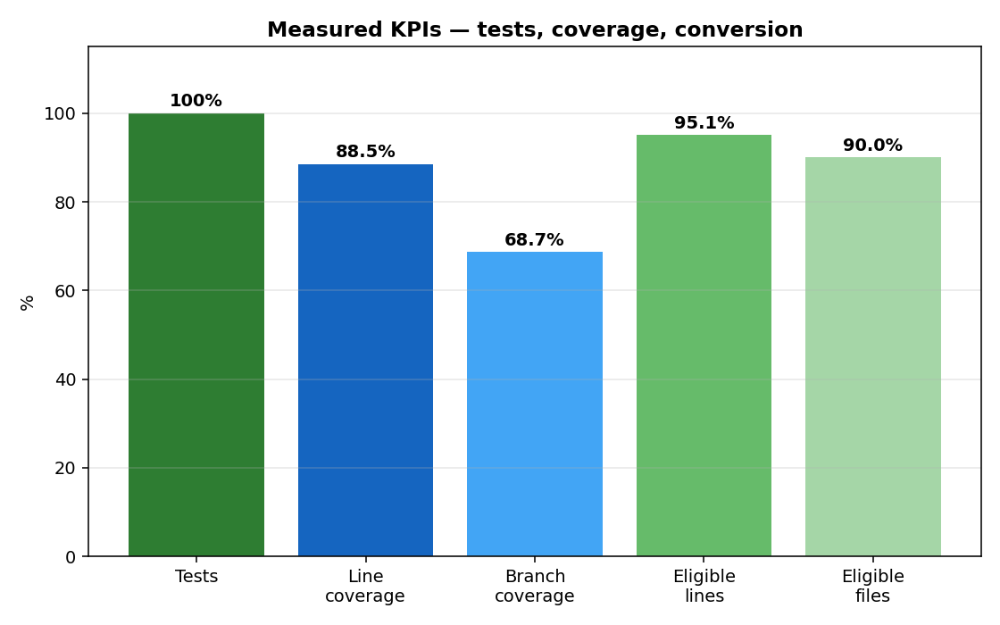
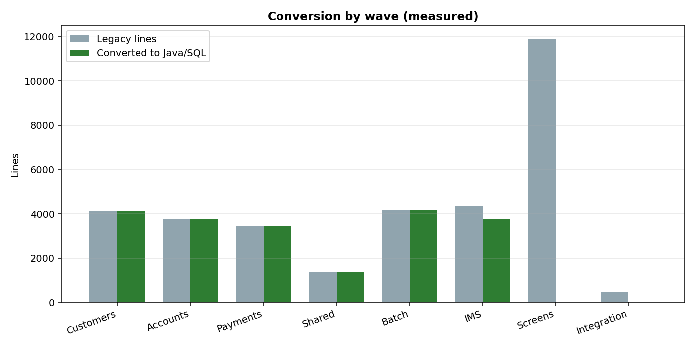
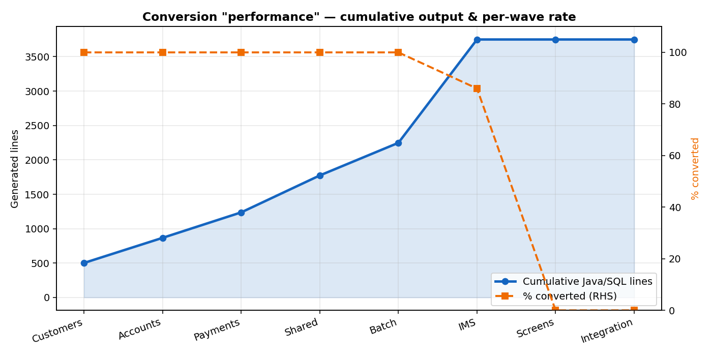

Modernization journey — every step
All steps executed for the POC, with results and where the evidence lives. Full detail: doc/modernization-results.docx
| # | Step | Result | Evidence | Status |
|---|
Mainframe source → Java conversion
Every legacy file type in src/base and what Devin converted it into inside src/modern/bankz-app.
| Legacy type | Files | Was | Converted into | Location |
|---|
Legacy files → Java files (per-file map)
Every converted legacy input and the Java file it became — from conversion/README.md and conversion-report.json.
| Legacy file (src/base / conversion/input) | Java file (src/modern/bankz-app) |
|---|
Results in charts



